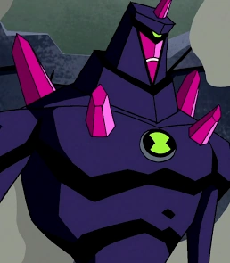
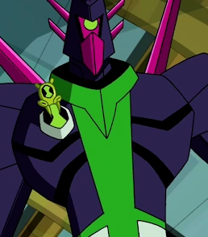

Cromatico
Crystalsapien
Cromático é um alienígena baseado em um silício de cristal extremamente durável. Seu corpo é de cor púrpura com várias linhas escuras e manchas. Suas mãos e cara são magenta, também possui 6 cacos magenta nas costas, 2 no peito e um na parte superior da cabeça, como um chifre. Sua face tem uma boca grande e um olho verde no centro.
Habilidades
absorção e reprodução de energia
Cromático possui a capacidade de refletir, refracionar e absorver qualquer tipo de raio laser.

aparencia no Força Alienigena e Supremacia

aparencia no omnivserse